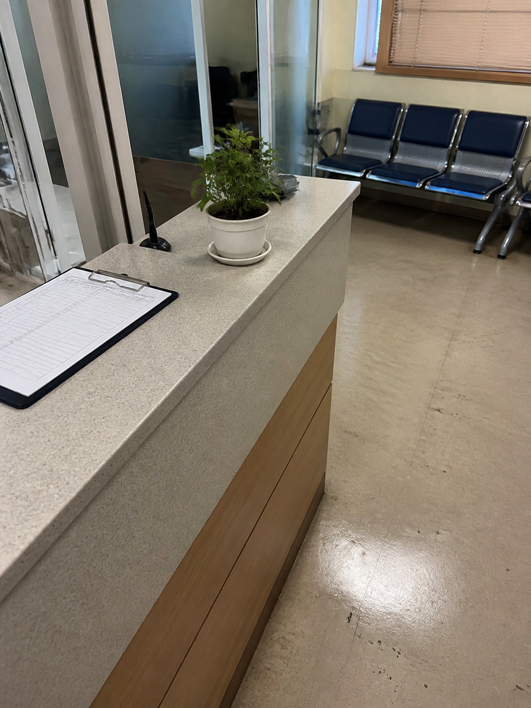

손님은 '이석증'으로 검색합니다. 우리 가게는 '맛집'으로 등록해 두었습니다
11월 12일부터 네이버에서 병원을 찾을 때 진료 질병명 10개 대신 증상·질병·시술·검진 30개로 검색됩니다. 손님이 쓰는 말과 사장님이 등록한 말이 어긋나서 생기는 일, 우리 업종에서 오늘 30분에 키워드를 다시 뽑는 순서를 적었습니다.

손님은 가게 이름을 모른 채 검색합니다. 11월 12일부터 네이버에서 병원을 찾을 때 "이석증"이나 "도수치료" 같은 말로 검색하면, 그 항목을 등록한 병원이 결과에 나옵니다. 그전에는 진료 질병명 10개만 등록할 수 있었는데, 증상·질병·시술·검진 네 갈래로 나눠 30개까지 등록할 수 있게 됐습니다.
이건 병원 이야기입니다. 그런데 속을 들여다보면 모든 가게의 이야기입니다.
10월 29일 공지, 11월 12일 반영#
네이버 스마트플레이스가 10월 29일 병의원 사업주에게 공지한 내용입니다. 키워드 등록 칸이 질병명 하나에서 네 갈래로 나뉘었습니다. 증상(어지럼증, 허리 통증), 질병(이석증, 족저근막염), 시술(도수치료), 검진(청력검사)입니다. 합쳐서 30개까지 넣을 수 있습니다.
등록 기능은 10월 29일부터 열렸고, 검색 결과 반영은 11월 12일부터 순차적으로 이뤄집니다. 기존에 등록해 둔 질병명은 그대로 유지되고, 진료과목별 추천 키워드도 함께 제공됩니다. 직접 입력한 말은 표준 명칭으로 정리됩니다.
한 가지 분명히 해 둘 게 있습니다. 네이버가 공식적으로 안내한 것은 검색 매칭 범위의 확대입니다. 플레이스 순위를 정하는 계산식 전체가 바뀌었다는 발표는 아닙니다. 실제로 우리 동네에서 어떤 변화가 생겼는지는 검색해 봐야 알 수 있습니다.
왜 10개가 30개가 되었나#
사장님은 진료과목으로 생각하고, 손님은 몸의 상태로 검색하기 때문입니다. 병원은 "정형외과"라는 말로 자기를 소개하는데, 허리가 아픈 사람은 "허리 통증"을 칩니다. 이 간격을 좁히라고 칸을 늘려 준 겁니다.
이 간격은 병원에만 있지 않습니다. 우리 가게에도 그대로 있습니다.
| 사장님이 등록한 말 | 손님이 실제로 치는 말 |
|---|---|
| 한식, 고기집 | 회식, 조용한 방, 주차 되는 곳 |
| 미용실 | 남자 펌, 붙임머리, 아침에 여는 곳 |
| 공방 | 커플 데이트, 비 오는 날 갈 곳 |
표를 보고 "우리는 둘 다 등록돼 있는데" 싶으면, 지난달 예약과 문의를 한번 펼쳐 보세요. 손님이 처음 던진 말이 거의 항상 두 번째 칸에 있습니다.
30개를 다 채우면 좋을까#
채우는 게 목적이 아닙니다. 30개를 다 넣어도 우리가 실제로 하지 않는 일이면, 그 검색으로 들어온 손님은 리뷰에 남깁니다. 그 리뷰는 다음 손님에게 더 오래 보입니다.
제가 쓰는 기준은 세 줄입니다.
- 손님이 실제로 쓴 말인지. 추측한 업종어가 아니라, 예약·문의·리뷰에 남은 표현이어야 합니다.
- 우리가 실제로 하는 일인지. 비슷한 시술이나 비슷한 메뉴까지 넣으면 문의 응대가 꼬입니다.
- 그 말로 검색했을 때 우리가 선택받을 수 있는지. 동네에 같은 말로 등록한 가게가 스무 곳이면, 스무 번째가 되는 것보다 열한 번째 말을 고르는 편이 낫습니다.
오늘 30분, 우리 업종 키워드 다시 뽑기#
병원이 아닌 가게에는 30개 칸이 생기지 않았습니다. 그래도 같은 일을 할 수 있습니다. 등록 칸이 아니라 소개글, 메뉴 이름, 블로그 제목에 그 말을 넣으면 됩니다. 순서는 이렇습니다.
- 최근 석 달 문의에서 손님이 쓴 말을 그대로 스무 개 적습니다. 전화 메모, 카톡, 예약 요청, 리뷰를 뒤지면 됩니다. 다듬지 말고 그대로 적으세요. "조용한 방" "주차" "아이 의자"처럼 명사가 섞여 나옵니다.
- 다섯 개씩 넣어 네이버 데이터랩에서 3년치를 봅니다. 데이터랩은 가장 많았던 시점을 100으로 두는 상대지수입니다. 그래서 같은 조회에 함께 넣은 말끼리만 비교해야 합니다. 따로 조회하면 검색량이 열 배 차이 나도 둘 다 100까지 올라갑니다.
- 계절어를 표시합니다. 12월에 오르는 말과 3월에 오르는 말을 같은 칸에 두면, 지금 쓸 말이 묻힙니다.
- 소개글 첫 두 줄, 대표 메뉴 이름, 블로그 제목에 하나씩 넣습니다. 같은 말을 다섯 번 반복하면 광고 문구처럼 읽힙니다. 한 번씩만 넣으세요.
- 한 달 뒤에 다시 봅니다. 이번 달에 넣은 말이 다음 달에 맞는지는 아무도 모릅니다. 달력에 한 줄 적어 두면 됩니다.
이 변화가 우리 가게에 바로 오는 건 아닙니다#
30개 칸은 병의원에만 생겼습니다. 다른 업종으로 확대된다는 공식 발표는 확인하지 못했습니다. 이 글은 그 구조를 빌려 우리 가게에 적용해 보자는 이야기입니다.
또 하나, 키워드를 등록한다고 순위가 오른다는 보장은 없습니다. 매칭되는 검색의 폭이 넓어질 수 있다는 것과, 그 검색에서 우리가 위에 온다는 것은 다른 문제입니다.
표준 명칭으로 정리되는 것도 양날입니다. 내가 쓰던 비표준어가 다른 말로 바뀌면, 그 말로 검색하던 손님과는 연결이 약해질 수 있습니다. 등록 후에 어떤 이름으로 남았는지 확인하세요.
데이터랩 수치는 검색량 자체가 아닙니다. 절대량이 필요하면 네이버 검색광고 키워드 도구를 함께 봐야 합니다.
주소의 이름과 손님이 부르는 이름이 다른 문제는 주소의 이름과 손님의 이름이 다를 때에, 손님 반경을 숫자로 재는 방법은 손님 반경은 감이 아니라 숫자입니다에 정리해 두었습니다.
우리 업종에서 어떤 말을 잡아야 할지 혼자 정하기 어려우면, 업종과 동네 이름만 카카오톡 채널 (새 탭에서 열림)로 보내 주세요. 지금 등록된 말과 손님이 쓸 만한 말의 간격을 세 줄로 짚어 드립니다.
확인한 자료#
- 아이보스(야무진마케팅 성지웅), 「네이버 병원 플레이스 大업데이트, 11월 12일부터 검색 노출이 달라진다?」, 2026년 11월 9일 — https://www.i-boss.co.kr/ab-6141-73244 (새 탭에서 열림)
- 네이버 스마트플레이스 사업주 공지, 2026년 10월 29일 (병의원 진료 키워드 등록 방식 개편) — https://help.naver.com/notice/noticeList.help?lang=ko&serviceNo=30026 (새 탭에서 열림)
- 네이버 데이터랩 검색어트렌드 — https://datalab.naver.com/keyword/trendSearch.naver (새 탭에서 열림)
자주 묻는 질문#
병원이 아닌데 30개 키워드를 등록할 수 있나요?#
아닙니다. 이번 개편은 병의원 업종에만 적용됩니다. 다른 업종은 플레이스 소개글, 메뉴 이름, 블로그 제목으로 같은 효과를 노려야 합니다.
키워드를 30개 다 채우면 노출이 늘어나나요?#
늘어난다는 근거는 확인하지 못했습니다. 실제로 하는 일과 손님이 쓰는 말이 겹치는 키워드가 몇 개인지가 더 중요합니다. 채우지 않은 칸이 있어도 문제되지 않습니다.
데이터랩 숫자가 실제 검색량인가요?#
아닙니다. 기간 중 가장 많았던 시점을 100으로 둔 상대지수입니다. 같은 조회에 넣은 키워드끼리만 비교하고, 절대 검색량은 네이버 검색광고 키워드 도구에서 확인하세요.
KEEP READING
이어서 읽기
같은 흐름에서 이어지는 글입니다. 지금 매장에 해당하는 지점부터 읽으시면 됩니다.

주소의 이름과 손님의 이름이 다를 때 — 지명 세 층을 맞추는 순서
법정동 주소, 행정동, 손님이 부르는 생활권 이름은 서로 다릅니다. 화성 여울동 명칭 변경과 광교의 두 시 경계 사례를 바탕으로, 가게 정보에 세 이름을 맞춰 놓는 순서를 정리했습니다.

손님 반경은 감이 아니라 숫자입니다 — 키워드보다 먼저 확인할 네 가지
무료 상권 데이터로 우리 가게의 손님 반경을 먼저 정하면 지역 키워드가 저절로 좁혀집니다. 소상공인365에서 확인할 네 가지 수치와 반경별 키워드 배치, 데이터로 알 수 없는 것까지 정리했습니다.